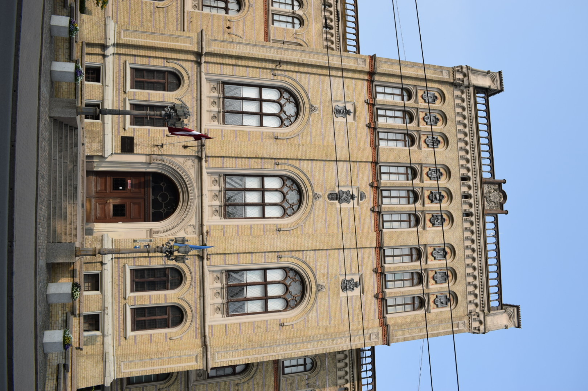

Latvijas Universitātes Galvenā ēka
Latvijas Universitātes Galvenā ēka atrodas pašā Rīgas sirdī — Raiņa bulvārī. Tā celta 19. gadsimta beigās kā Rīgas Politehniskā institūta ēka, un šobrīd kalpo kā universitātes simbols. Šeit atrodas rektora birojs, administratīvās telpas un vairākas fakultātes.